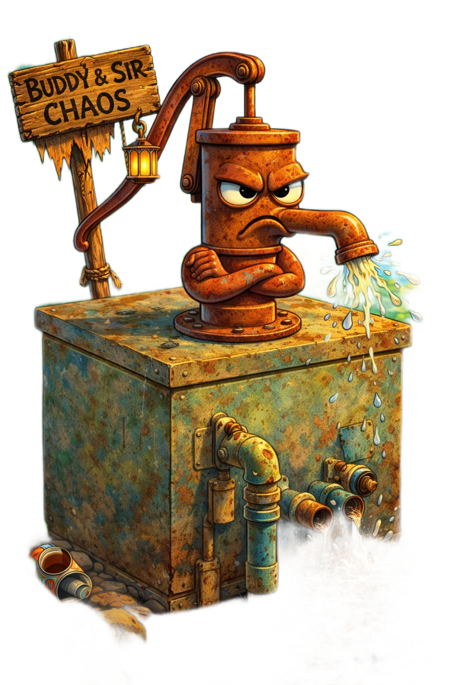
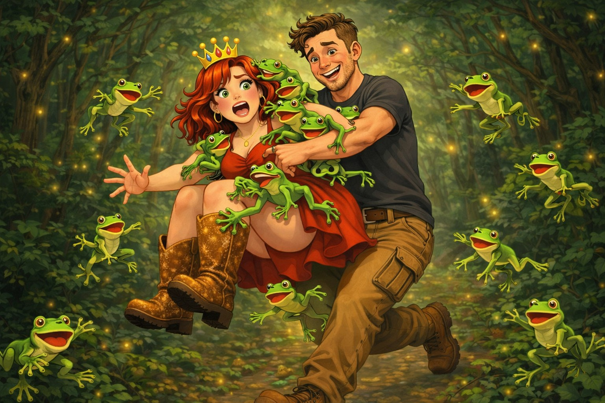
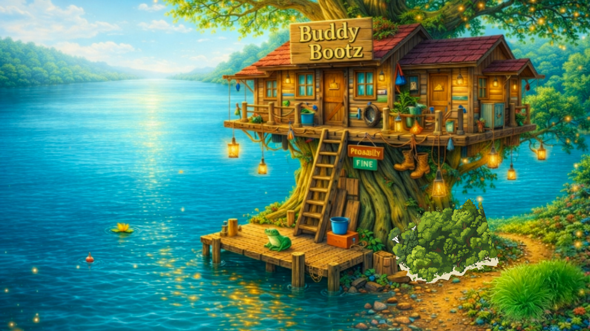
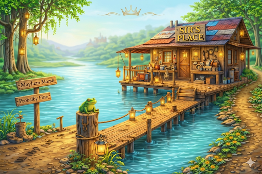
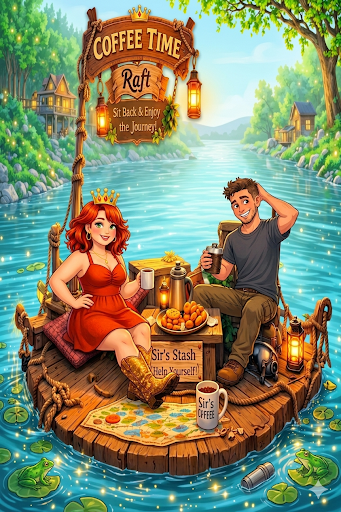
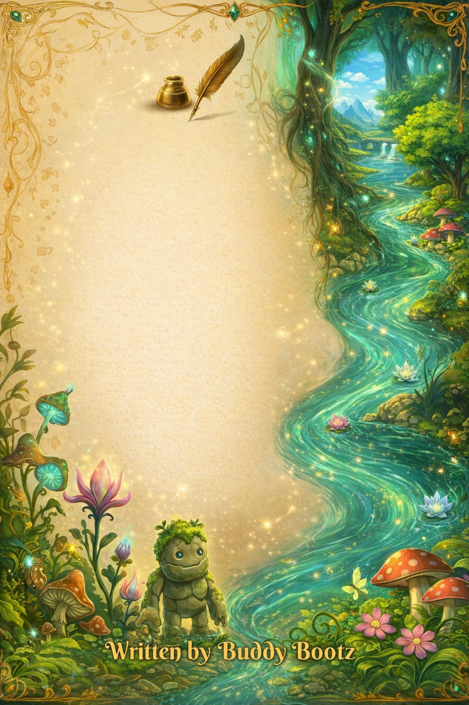

The Adventures of Buddy Bootz & Sir Drinks-A’Lot
The river doesn’t forget. It reacts.
The river doesn’t forget. It reacts.

The morning started wrong.
The pump coughed.
The ladder slipped.
The bush fought back.
Buddy Bootz landed flat on her dignity and blamed the squirrel.
Sir Drinks-A’Lot didn’t argue...
The raft creaked.
The water shifted.
the river opened.


It doesn't slow down.




And somehow… it keeps working.

Conversations between the chaos. It’s quieter here. Not for long.
Some things are easier to see than explain.
This one… you’ll want to watch.
If you want to see what happens next—stay close.
Watch what happens next. Before it changes.
Watch MoreThat’s not even the full story.
It didn’t start there.
If you want to see what happens next—stay close.

You’re not seeing all of it yet.

It wasn’t the current that changed...
The creatures here aren’t just animals...
There’s more to this one.
We talked about it—before it changed again.
If you want to see what happens next—stay close.